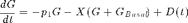
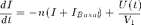

Diabetes Control Project Part 2: MPC Control
Type 1 Diabetes (also called Juvenile Onset Diabetes) is a chronic disease in which the pancreas does not produce enough insulin to regulate glucose levels in the blood stream. The consequences are severe. Extremely glucose levels are immediately life threatening, while chronically high glucose levels causes long term organ damage. Conventional treatment requires patients to measure their blood glucose levels several times a day and inject insulin to maintain glucose levels within an acceptable band.
The development of continuous glucose monitors and insulin pumps has made it possible to provide closed-loop control of blood glucose levels. Such devices are currently in clinical trials.
Contents
The Project
The project is to design a controller using the MPC toolbox that can handle disturbances associated with the normal diet and exercise, and that is not overly sensitive to small model errors. The following specifications are to be met:
1. Linearize the nominal at different operating points, and for different metabolic parameters. The operating points follow. For each operating point obtain a linear model, and import that model into mpctool
Gb Ib p3 V
[mg/dL] [mU/L] [1/min] [L]a. Nominal Patient 81 15 5.035e-5 12 b. Reduced Basel Insulin Production 81 5 5.035e-5 12 c. Moderate Insulin resistance 81 15 3.0e-5 12 d. Incipient Type II diabetic 81 15 3.0e-5 20
2. The following constraints are to be observed.
Maximum insulin infusion rate: 115 mU/min Minimum Glucose level: 35 mg/dL Maximum Glucose level: 250 mg/dL Desirable Glucose range: 80-150 mg/dL
3. The controller must be tested for the following (24 hr) scenarios. Each disturbance is evenly distributed over the indicated time period.
Total D
a. Nominal Diet and Exerise
Breakfast: 7:30-7:45 am 120
Lunch: 12:00-12:20pm 120
Exercise: 4-5pm -80
Dinner: 6:00-6:30 200
Snack: 10:00-10:30 80 b. Increased Exercise. Modify the exercise disturbance to to -120 and
extend the period to 4:00-5:30pm.c. Large Dinner: Increase dinner to 400 over an extended period 6-7pm.
Your task is to design a single MPC controller and test using all combinations of models and scenarios (a total of 12 combinations). Under no circumstances should your controller allow excursions outside of the hard constraints. You should report the following figures of merit, both which you should try to keep small.
1. The total amount of time the glucose is outside of the desired glucose range.
2. The total amount of insulin delivered.
Insulin/Glucose Model
The following model is presented in the Seborg, Edgar, Mellichamp and Doyle textbook (Section 23.3.1).



Where  is the deviation of plasma glucose concentration from the basal level, is the deviation of plasma insulin concentration from the basal level, and is the deviation of insulin concentration from basal level near the active site.
is the deviation of plasma glucose concentration from the basal level, is the deviation of plasma insulin concentration from the basal level, and is the deviation of insulin concentration from basal level near the active site.  is the
is the
% Parameter Values p1 = 0.028735; % 1/min p2 = 0.028344; % 1/min p3 = 5.035e-5; % 1/min V = 12; % L n = 0.0926; % 1/min